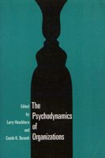

An exploration of psychological issues that arise in modern corporations
An exploration of psychological issues that arise in modern corporations


 An exploration of psychological issues that arise in modern corporations
An exploration of psychological issues that arise in modern corporations

|  |
The Psychodynamics of Organizationsedited by Larry Hirschhorn and Carole K. Barnettpaper EAN: 978-1-56639-021-7 (ISBN: 1-56639-021-4) |
The changing character of organizational life in the post-industrial world has caused organizational psychoanalysis to reemerge as a vital discipline. Modern technologies and the global economy continue to create new sources of anxiety and risk. In this volume, fifteen essays demonstrate how social irrationality shapes organizational life. The contributors focus on problems in productivity and morale; issues of anger and aggression as well as hope and mutuality in organizations; and troubling changes associated with growth or cutbacks. Richly drawn case studies (of a law firm, a factory, an oil refinery, a coal mine, among others) are framed by more theoretical discussion.
Acknowledgments
Introduction
Part I: The Person and the Organization
1. The Managerial Couple: Superior-Subordinate Relationships as a Unit of Analysis – James Krantz
2. Mourning, Potency, and Power in Management – Laurent Lapierre
3. Organizational Politics Against Organizational Culture: A Psychoanalytic Perspective – Howell S. Baum
4. Contemporary Perspectives on Personal and Organization Authority: The Self in a System of Work Relationships – Laurence J. Gould
Part II: Case Studies
5. Professionals, Authority, and Group Life: A Case Study of a Law Firm – Larry Hirschhorn
6. How Organizational Culture Can Affect Innovation – Steven P. Feldman
7. Group Self-Esteem and Group Performance – Glenn Swogger, Jr.
8. The Psychodynamics of a Cultural Change: Learnings from a Factory – Larry Hirschhorn and Thomas N. Gilmore
9. The Psychodynamics of Safety: A Case Study of an Oil Refinery – Larry Hirschhorn and Donald R. Young
10. The Assumptions of Ordinariness as a Denial Mechanism: Innovation and Conflict in a Coal Mine – Eric L. Trist
Part III: Culture, Politics, and Race: Organizational Psychodynamics in Context
11. The Mythological Structure of Organizations and Its Impact – Abraham Zaleznik
12. Mentoring and Irrationality: The Role of Racial Taboos – David A. Thomas
13. Alexithymia in Organizational Life: The Organization Man Revisited – Manfred F.R. Kets de Vries
14. Bureaucracy as Externalized Self-System: A View from the Psychological Interior – Michael A. Diamond
15. On the Psychodynamics of Organizational Totalitarianism – Howard S. Schwartz
About the Contributors
Index
Larry Hirschhorn is Principal of the Center for Applied Research, Inc., a faculty member at the William Alanson White Institute's Program on Organizational Development and Consultation, and the author of several books, including The Workplace Within.
Carole K. Barnett is a Ph.D. candidate in the Organizational Psychology Program at the University of Michigan and co-editor of Globalizing Management: Creating and Leading the Competitive Organization.
Contributors: Howell S. Baum, Michael A. Diamond, Steven P. Feldman, Thomas N. Gilmore, Laurence J. Gould, Manfred F.R. Kets de Vries, James Krantz, Laurent Lapierre, Howard S. Schwartz, Glenn Swogger, Jr., David A. Thomas, Eric L. Trist, Donald R. Young, Abraham Zaleznik, and the editors.
Labor Studies and Work
Psychology
Labor and Social Change, edited by Paula Rayman and Carmen Sirianni.
Labor and Social Change, edited by Paula Rayman and Carmen Sirianni, includes books on workplace issues like worker participation, quality of work life, shorter hours, technological change, and productivity, as well as union and community organizing and ethnographies of particular occupations.
© 2015 Temple University. All Rights Reserved. This page: http://www.temple.edu/tempress/titles/859_reg.html.